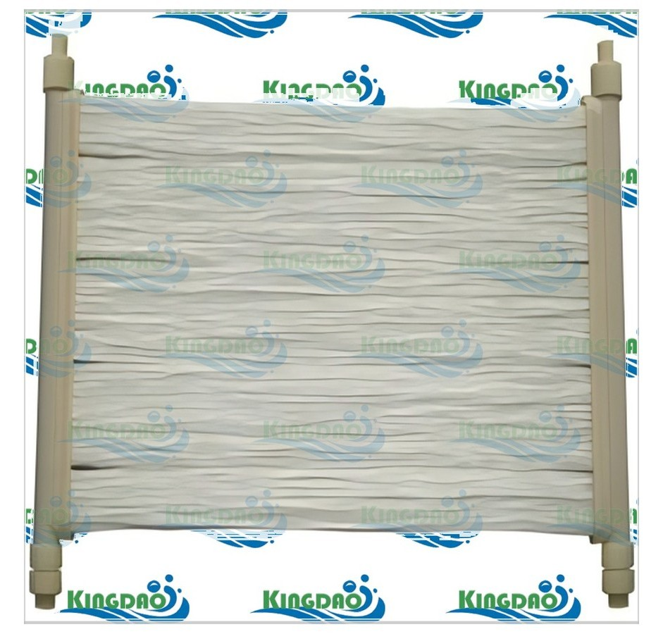
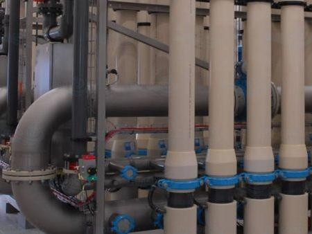
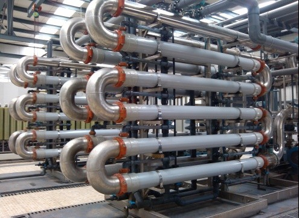
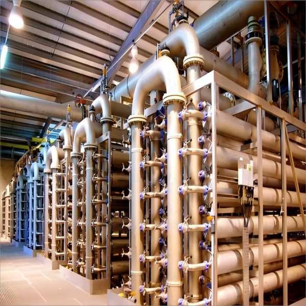
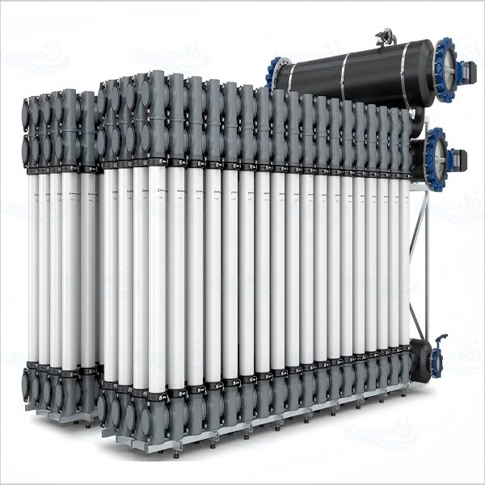

A membrane system separates water from solids with a physical barrier instead of a clarifier. The five series differ in how that barrier is packaged: flat curtains submerged in the tank, tubes driven by an air-lift loop, tubes run in cross-flow, and hollow fibre in horizontal or vertical pressure modules.
Which one you get is decided by the feed, not by preference. Fibrous or high-solids streams go to tubular; a basin that already exists goes to curtain; reuse and RO pre-treatment, where floor area is available, go to horizontal or vertical hollow fibre. Everything else — flux, area, cleaning regime — follows from that choice.
Modules and frames, or the complete membrane package: modules, aeration frame, permeate pump, backwash and chemical cleaning equipment, control cabinet, and the process design around it. We size the membrane area against your flux, your peak flow and your cleaning regime — not against a catalogue page.
Same order as the tables above — the physical unit behind each specification.





Same catalogue the old plant designs were built on — curtain MBR, air-lift tube, cross-flow tubular, horizontal and vertical hollow fibre. Pick by the feed, not by the picture.
Submerged PVDF hollow-fibre curtain between top and bottom headers, air scour from below. This is the workhorse where the basin already exists and the membrane has to fit inside it.
| Membrane material | PVDF |
| Pore size | 0.1 μm |
| Fibre inner / outer diameter | 0.8 / 1.5 mm |
| Header | ABS pipe, epoxy potting |
| Filtration mode | Outside-in, 0.01–0.05 MPa negative pressure |
| Operating temperature / pH | 5–45 °C / pH 2–11 (cleaning 1–12) |
| Design flux | 10–12 L/m²·h, gas-water ratio 20:1–40:1 |
| Permeate quality | SS >2 μm 100%, turbidity ≤1 NTU, SDI ≤2.5 |
| Oil in feed / max residual chlorine | <2 mg/L / 200 mg/L |
Element range: 10 / 15 / 20 m² (535 × 1010 / 1500 / 2000 mm), 2–8 m³/d per element at design flux.
Tubular membrane driven by an air-lift loop instead of a circulation pump — no high-pressure circuit, and the tube passes fibrous and high-solids feed that would blind a hollow fibre.
| Membrane tube | F4385, 5.2 mm bore |
| Module area | 29 m² / 33 m² |
| Pore size | 30 nm |
| Flux | 40–60 L/m²·h |
| Transmembrane pressure | −0.1 to 0.5 bar |
| Operating mode | Air-lift tube |
The high-solids route: tubular modules in cross-flow at 2–5 bar, used for oily wastewater, landfill leachate and sludge-type streams where nothing else stays clean.
| Membrane tube | 8 mm bore (F5385) |
| Module area | 6.4 / 15.2 / 27.2 / 33 / 29 m² |
| Pore size | 30 nm |
| Flux | 60–200 L/m²·h |
| Transmembrane pressure | 2–5 bar |
| Operating mode | Cross-flow |
| Layout | (1×2 … 2×6) × N racks |
Pressurised horizontal modules on a skid, outside-in, for reuse and RO pre-treatment where floor area is available and the feed is already screened.
| Module area | 64 / 55 / 40 m² |
| Element size | 8.7″ × 1.54 m |
| Pore size | 20 nm |
| Fibre inner diameter | 0.8 mm |
| pH range | 2–12 |
| Shell material | PVC |
| Transmembrane pressure | 10–80 kPa (max 300 kPa) |
| Operating mode | Cross-flow / full-flow |
The same 64 / 55 / 40 m² module in a vertical stack — the footprint drops, which is what matters when the plant is skid-mounted or the room is already built.
| Module area | 64 / 55 / 40 m² |
| Element size | 8.7″ × 1.54 m |
| Pore size | 20 nm |
| Fibre inner diameter | 0.9 mm |
| pH range | 2–12 |
| Shell material | PVC |
| Transmembrane pressure | 10–80 kPa (max 300 kPa) |
| Operating mode | Cross-flow / full-flow |
PVDF hollow fibre, 0.1 μm pore, potted in epoxy and collected through an ABS header — specified for what it survives rather than what it costs.
Why PVDF. It holds up against the two things that kill membranes in service: chemical cleaning (hypochlorite and citric acid cycles) and mechanical fatigue from continuous air scour. Cheaper polymers work until the first aggressive clean, then the fibre embrittles and starts snapping at the potting.
Why 0.1 μm. That pore size rejects suspended solids completely while leaving dissolved salts in the permeate — which is what allows the permeate to go to a reverse osmosis stage without prefiltration, or to discharge directly.
The cassette. Fibres are mounted as a curtain over an aerated frame. The air does two jobs at once: it scours the fibre surface so the cake does not consolidate, and it supplies the biology. That is the whole reason submerged MBR works at low pressure.
| Item | Specification |
|---|---|
| Membrane material | PVDF (polyvinylidene fluoride) |
| Pore size | 0.1 μm |
| Fibre inner / outer diameter | 0.8 / 1.5 mm |
| Permeate collector | ABS |
| Fibre potting | Epoxy resin |
| Solids rejection | Suspended solids above 2 μm: 100 % |
| Configuration | Curtain / submerged, aerated cassette |
Membrane retention holds mixed liquor above 10 g/L, so the plant absorbs a shock load instead of passing it downstream.
Separation happens at the membrane, so filamentous growth, rising sludge and solids washout stop being failure modes.
Nitrifiers stay in the system rather than leaving with the flow — which is what makes ammonia removal actually work at low temperature.
High volumetric load at low F/M means little surplus sludge; in theory the train can run at zero discharge.
A membrane train replaces clarifier plus tertiary filtration, at a third to a fifth of the land.
| Conventional activated sludge | Membrane bioreactor | |
|---|---|---|
| Mixed liquor suspended solids | 3 – 5 g/L | 10 – 20 g/L |
| Sludge age | Short, and hard to control | Long, and fully controllable |
| Which bacteria survive | Only the fast growers | Slow growers too — nitrifiers are retained |
| Filamentous bulking | Recurring problem | Not possible — no clarifier to bulk in |
| Footprint | Baseline | One third to one fifth |
Where the duty is water polishing rather than biomass separation — potable water, process water, reuse — the same element covers it in three areas.
Inside-out, single fibre construction. Feed enters the lumen and passes outward through the wall, so the solids stay in the bore where they can be flushed out rather than packing against the outside of the bundle. Individual fibres can be plugged and repaired without scrapping the element.
What it removes. Bacteria at 6-log reduction and viruses at 4-log — mechanical removal, not disinfection, so it does not depend on dose or contact time. Permeate typically runs at SDI below 3 and turbidity below 0.1 NTU, which is clean enough to feed a reverse osmosis stage directly.
Chemical tolerance. pH 2 to 12 and up to 250 mg/L free chlorine means the element survives the cleaning regimes that a potable or reuse plant actually runs, including chlorine-tolerant organism control.
Where it is used. Drinking water production (Cryptosporidium and Giardia are the drivers), process water ahead of demineralisation, reuse trains, and swimming pool circulation where chlorine demand has to come down.
| Model | Membrane area | Element size |
|---|---|---|
| HF-64 | 64 m² | 8.7" × 1.54 m |
| HF-55 | 55 m² | 8.7" × 1.54 m |
| HF-40 | 40 m² | 8" × 1.54 m |
| Common specification | Value |
|---|---|
| Pore size | 20 nm |
| Fibre inner diameter | 0.9 mm |
| pH range | 2 – 12 |
| Housing material | PVC |
| Transmembrane pressure | 10 – 80 kPa (300 kPa maximum) |
| Operating mode | Cross-flow or dead-end |
| Membrane chemistry | Hydrophilic PES / PVP blend |
Every element is pressure-tested for integrity before dispatch. Element count is set from the permeate flow and the flux the feed allows — send us the water analysis and we will issue the array.
Distillery, dairy, bioethanol and similar high-COD streams: digest first, then separate with a membrane, and sell the biogas instead of paying to aerate it.
The train. Screening to take out the coarse material that would damage the membrane, a buffer tank to even out the flow, the anaerobic reactor itself at mesophilic temperature, and then ultrafiltration to hold the biomass in the reactor instead of letting it leave with the effluent.
What it buys you. COD removal above 95 %, a methane-rich gas stream instead of an aeration bill, and a permeate clean enough to discharge or reuse. The membrane is what makes the solids retention time independent of the hydraulic retention time — which is the whole point of an anaerobic reactor.
What to watch. Temperature control, nutrient dosing where nitrogen and phosphorus are short, and pre-screening. An anaerobic MBR is not a place to save money on the front end of the train.
Average and peak flow in m³/d, and whether it includes infiltration.
COD, BOD, SS, ammonia and oil/grease where relevant.
What the effluent has to meet, and whether it will be reused.
Existing tanks if it is a retrofit, or the space available for new ones.
If a conventional process meets your standard at lower cost, we will say so. Send the flow and the discharge limit and we will tell you honestly which route fits.